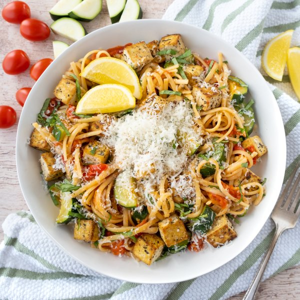

Linguini with Tofu, Fresh Tomato Sauce, Zucchini, Basil & Parmesan

Total Time
35 min
Nutrition (Per Serving)
632.1 kcalCalories
36.5 gProtein
71.3 gCarbs
25.2 gFat
Full nutrition table
| Calories | 632.1 kcal |
| Total fat | 25.2 g |
| Saturated fat | 5.1 g |
| Trans fat | 0.1 g |
| Cholesterol | 9.6 mg |
| Sodium | 62.2 mg |
| Carbohydrates | 71.3 g |
| Fiber | 7.1 g |
| Sugars | 12 g |
| Protein | 36.5 g |
| Potassium | 1338.3 mg |
| Calcium | 379.2 mg |
| Iron | 7.5 mg |
| Vitamin A | 1683.1 IU |
| Vitamin C | 62 mg |
| Vitamin D | 2.7 IU |
Cookware
Ingredients
- 8 fl ozchicken or vegetable broth
- 2 (12 oz) pkgextra firm tofu
- 1 small pkgfresh basil
- 2 clovesgarlic
- 2 pintsgrape tomatoes
- 1lemon
- 10 ozlinguine pasta
- 2 ozParmesan cheese
- 4 mediumzucchini squash
- black pepper
- crushed red pepper
- extra virgin olive oil
- Italian seasoning
- onion powder
- salt
Steps
- Fill a large pot halfway with hot water (from the tap), cover, and bring to a boil. Uncover, add salt and pasta, and stir for a few seconds. Cook until desired firmness, 8-10 minutes.1 tsp salt
10 oz linguine pasta - Meanwhile, cut tofu in half along the long side. Sandwich tofu between clean towels or paper towels and place on a baking sheet pan. Place a cutting board with something heavy on top and set aside to press out excess water.2 (12 oz) pkg extra firm tofu
- Wash and dry the fresh produce.2 pints grape tomatoes
4 medium zucchini squash
1 small pkg fresh basil
1 lemon - Preheat a large skillet over medium-high heat.
- While the skillet heats up, cut the tofu into ¾-inch cubes.
- Once the skillet is hot, add oil and swirl to coat the bottom. Add tofu to the skillet and sprinkle with spices; cook, turning often, until golden on all sides, about 6 minutes.4 tsp extra virgin olive oil
½ tsp Italian seasoning
½ tsp onion powder
½ tsp salt
⅛ tsp black pepper - Meanwhile, halve tomatoes and transfer to a medium bowl.
- Trim and halve zucchini lengthwise; cut crosswise into ¼-inch thick half-moons. Add to the bowl with the tomatoes and set aside.
- Peel and mince garlic.2 cloves garlic
- When the tofu is done, remove to a plate, loosely cover with aluminum foil, and set aside.
- Return the skillet to medium-high heat and add more oil, swirling to coat the bottom. Add garlic and crushed red pepper; cook, stirring constantly, until fragrant, about 15 seconds.4 tsp extra virgin olive oil
½ tsp crushed red pepper - Add tomatoes, zucchini, broth, Italian seasoning, and salt to the skillet. Stir to combine and bring to a boil; reduce heat and simmer until zucchini is soft and sauce has thickened, 6-7 minutes.8 fl oz (1 cup) chicken or vegetable broth
1 tsp Italian seasoning
1 tsp salt - Meanwhile, pick basil leaves off the stems, roll up crosswise, and thinly slice into ribbons. Cut lemon into wedges; set both aside.
- Finely grate Parmesan.2 oz Parmesan cheese
- When the pasta is done, drain in a colander and return to the pot. Add zucchini-tomato sauce and tofu to the pot; gently toss to combine.
- To serve, divide pasta between plates; top with Parmesan, basil, and a squeeze of lemon. Enjoy!